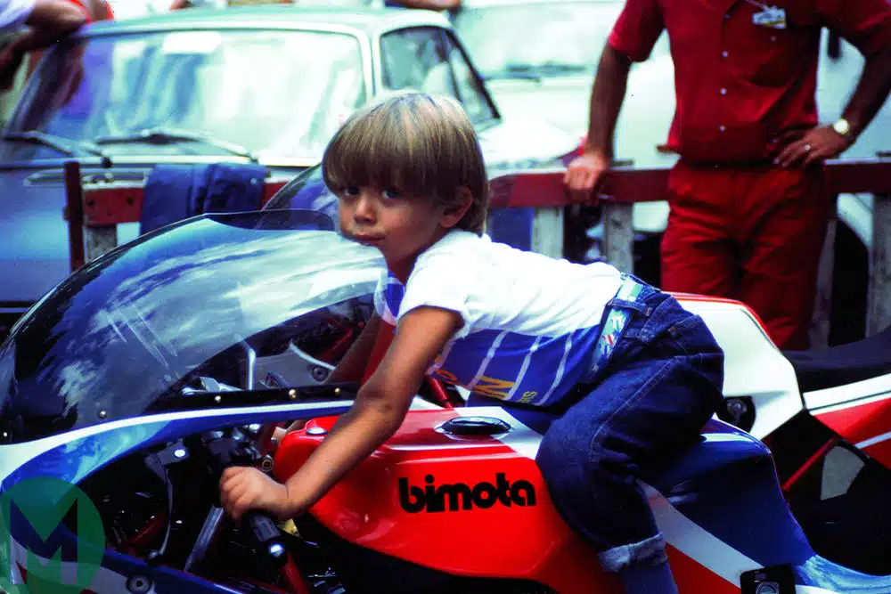
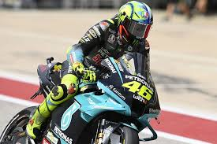
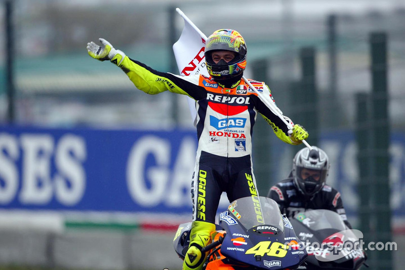
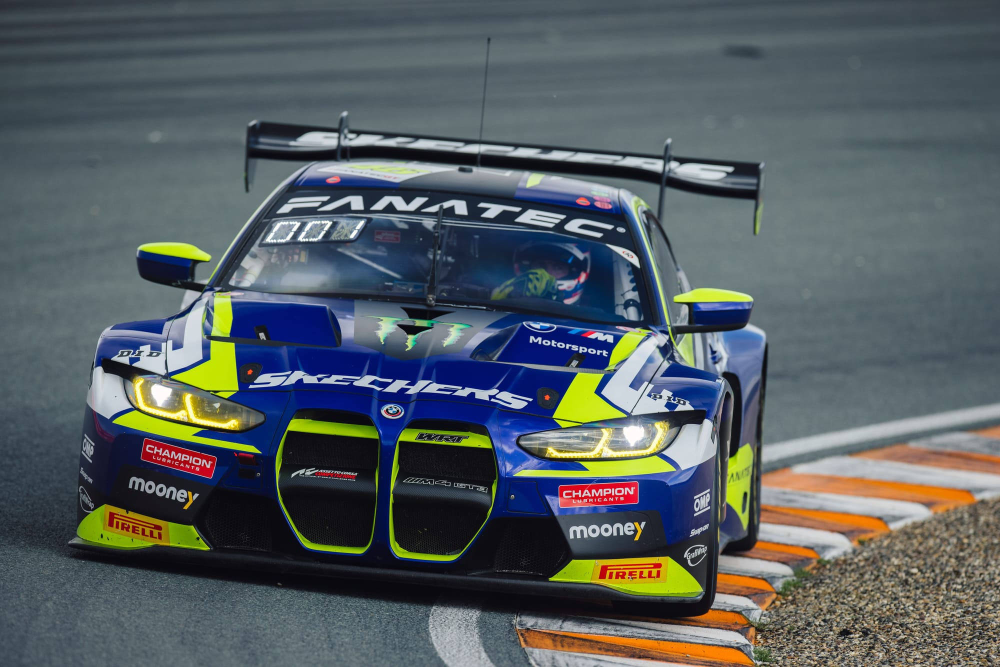

Valentino Rossi, narozený 16. února 1979 v Urbinu, Itálie, je jedním z největších motocyklových závodníků všech dob. S přezdívkou "Il Dottore" (Doktor) si Rossi vybudoval neuvěřitelnou kariéru plnou triumfů a nezapomenutelných momentů.
Valentino Rossi začal závodit ve velmi mladém věku díky podpoře svého otce Graziana Rossiho, bývalého motocyklového závodníka. Již od mládí projevoval výjimečný talent a závodnického ducha. Své první velké vítězství slavil v roce 1997, kdy získal titul mistra světa v kategorii Moto3.
Rossi rychle postoupil do vyšších kategorií. V roce 1999 se stal mistrem světa v kategorii Moto2 a o rok později debutoval v nejvyšší kategorii – MotoGP. Jeho přirozený talent a neuvěřitelná odhodlanost mu brzy přinesly úspěch. V roce 2001 získal svůj první titul mistra světa v královské kubatuře, který následovaly další triumfy v letech 2002, 2003, 2004, 2005, 2008 a 2009.
Valentino Rossi je také známý svou láskou k rallye a závodům automobilů. V roce 2022 se zúčastnil závodů GT World Challenge Europe. Mimo závodní dráhu je Rossi vášnivým sběratelem motocyklů a automobilů a žije v Tavullii, Itálie, kde má i svou závodní akademii.Valentino Rossi zůstane navždy ikonou motorsportu, symbolem vášně, dovednosti a oddanosti. Jeho kariéra inspirovala generace jezdců a fanoušků po celém světě.
